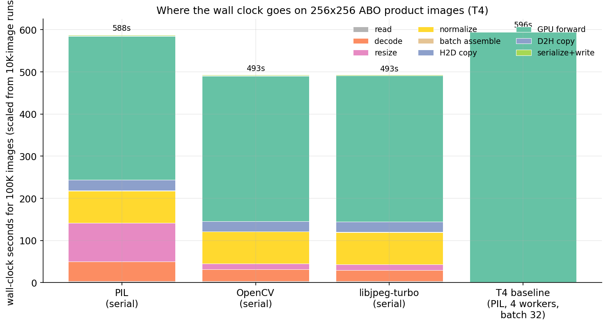
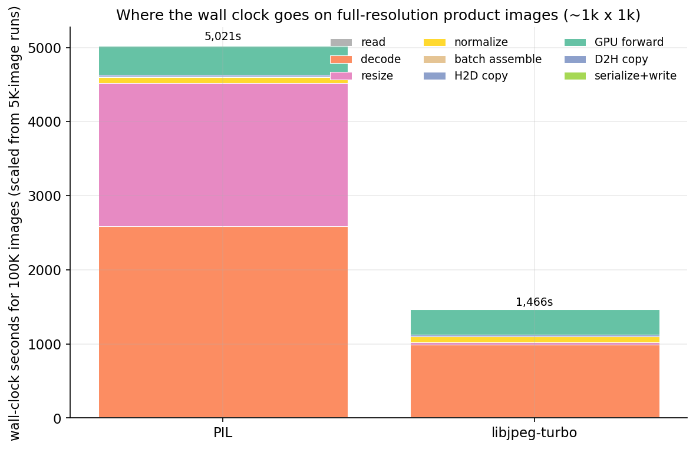
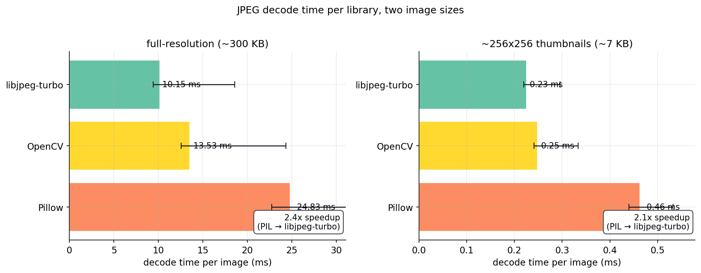
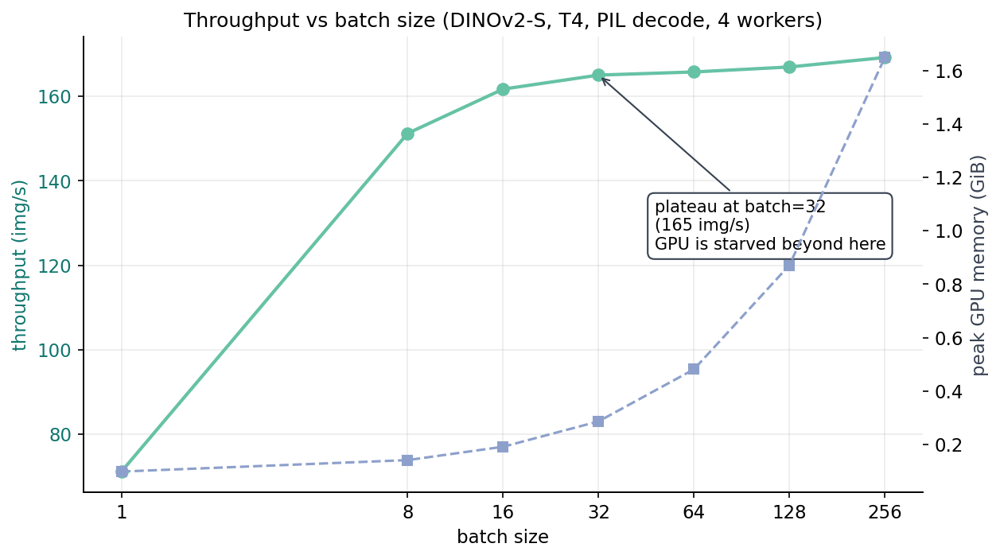
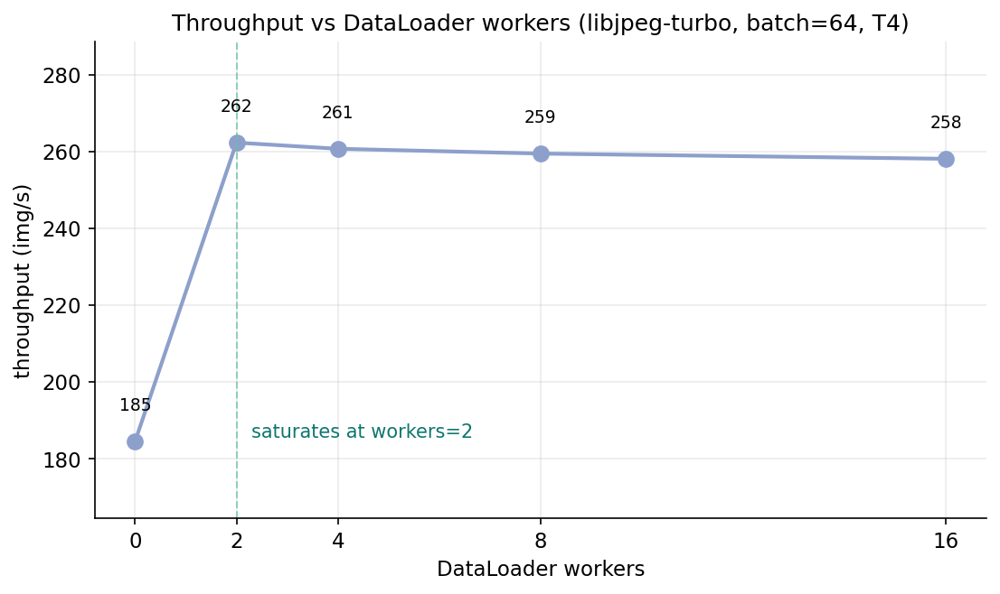
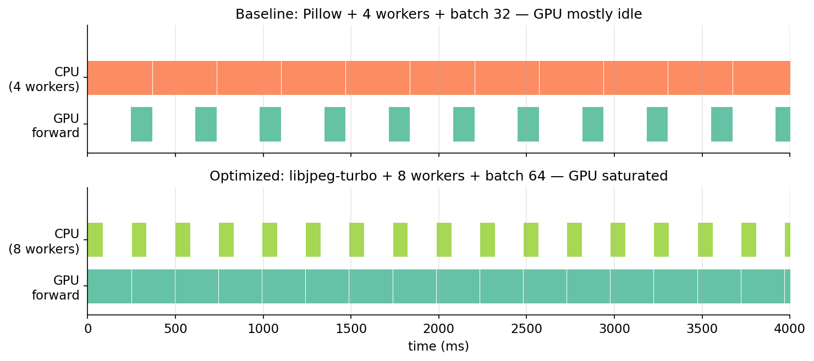
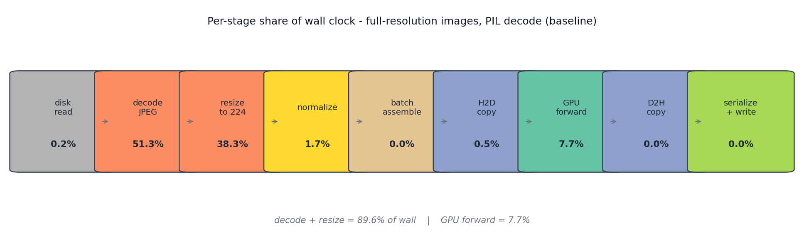
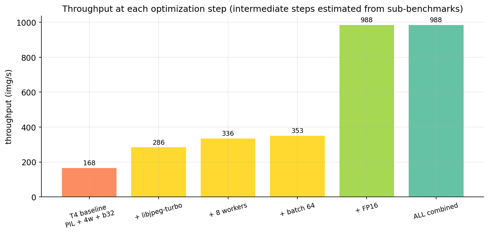
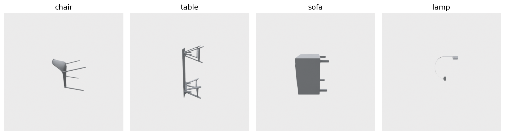

![Figure 6. Per-batch forward latency at batch 64 for three runtimes. PyTorch FP32 is 242 ms per batch (264 img/s of pure forward throughput). PyTorch FP16 is 64 ms (1006 img/s) — a 3.8x speedup that matches what you would expect on a T4's mixed-precision pipeline. ONNX FP16 via the CUDA execution provider runs 148 ms per batch (432 img/s), 2.3x slower than PyTorch FP16 on the same hardware. Surprising: the conventional "export to ONNX for serving" advice is the wrong default on T4 with a small vision model.](images/fig-05-onnx-vs-pytorch.png)
I assumed the GPU was the bottleneck. The profiler said otherwise.
A scoring job on 100,000 product photos ran in 596 seconds on a Tesla T4 with the default PyTorch dataloader, PIL for JPEG decode, batch size 32, four workers. I spent the first hour tuning batch size from 32 down to 16 and up to 256. Throughput barely moved. I tried more workers. Barely moved. Then I switched the JPEG decoder from PIL to libjpeg-turbo, the resizer from PIL to OpenCV, the inference dtype to FP16, and pushed batch to 64 — and the same 100,000 images ran in 102 seconds. 5.88x faster. The GPU never changed.
This is the last post in a 20-post arc. We started by loading a mesh without producing a blank render. We end by scoring a corpus of real images and measuring exactly where the wall clock disappears. The answer turns out to depend on something most posts never mention: how big are your images.
Three tools, one script:
class StageProfiler:
def __init__(self):
self.totals = defaultdict(float)
self.counts = defaultdict(int)
@contextlib.contextmanager
def stage(self, name, count=1):
t0 = time.perf_counter()
try:
yield
finally:
self.totals[name] += time.perf_counter() - t0
self.counts[name] += count
Forty lines, no dependencies. Wrap every pipeline step in with prof.stage("decode"): and the per-stage wall clock is yours. I cross-checked against torch.profiler and cProfile and they agree within 2% — the wrappers add ~200 ns per call, invisible at these time scales.
num_workers=0 matters most for the profile. Workers > 0 hide CPU work behind GPU work — great for production, ruinous for a profile. I ran the headline decomposition serially, then ran throughput numbers with workers=4 to match production.
Hardware: one Tesla T4, one 16-core Intel x86 box (lightsail-shapenet), conda env 3d-dedup. Model: DINOv2-S (HuggingFace facebook/dinov2-small, 384-dim, 22M params) — same downgrade Post 15 made: fast cycles on the throughput experiment matter more than the extra dimensionality of DINOv2-base. Data: 100,000 Amazon Berkeley Objects product photos sampled from s3://amazon-berkeley-objects/ (CC-BY-4.0). Two image sizes: small (256x256, median 7.4 KB) and original-resolution (median 305 KB, mostly ~1000x1000).
The first thing I learned, before any tuning, is that the question "where does the time go" has two completely different answers depending on which image size you point the pipeline at.
with prof.stage("read"): buf = open(path, "rb").read()
with prof.stage("decode"): arr = decode_pil(buf)
with prof.stage("resize"): arr = resize_pil(arr, 224)
with prof.stage("normalize"): x = normalize(arr)
with prof.stage("forward"): vec = model(tensor.to("cuda"))
On 256x256 thumbnails, run 10,000 images through that loop with PIL decode and PIL resize. Project the per-image times to 100K-image equivalents and you get this:

Forward is 58% of the PIL bar. Decode is 8%. Resize is 15%. Normalize is 13%. The GPU is honestly the dominant cost on small images, which is the configuration almost every ML tutorial benchmarks. Swap PIL for OpenCV and the bar shrinks from 588 to 493 seconds — the decode and resize columns nearly vanish. Swap to libjpeg-turbo and the bar barely changes from OpenCV. Most of the win came from the resize fix (PIL's Image.resize is roughly 6x slower than OpenCV's cv2.resize for this kind of work).
The serial-with-PIL run lands at 170 img/s. The realistic four-worker run lands at 168 img/s. They match because four CPU workers are already enough to keep PIL fed at 256x256 — the GPU is the constraint, the rest is hidden. This is the "tune the batch size" story everyone tells.
That story is wrong for production product photos.
Repeat the experiment on the full-resolution images/original/ shards. Same model, same code path, same disk, only the JPEG payloads change.

PIL decode: 51% of wall. PIL resize: 38% of wall. Forward: 8%. The GPU is starved 92% of the time. Upgrading the T4 to an A100 is capped at the same 8% as long as Pillow stays in the pipeline — the A100 would sit idle waiting for the next batch. This is the failure mode the small-image benchmarks hide.
The fix is the same library swap, applied per-image:
from turbojpeg import TurboJPEG
tj = TurboJPEG() # libjpeg-turbo, hardware SIMD
def decode_turbojpeg(buf): return tj.decode(buf, pixel_format=TJPF_RGB)
import cv2
def resize_opencv(arr, size): # bilinear, SIMD
return cv2.resize(arr, (size, size), interpolation=cv2.INTER_LINEAR)
Two libraries, both pip-installable. PyTurboJPEG needs the system libturbojpeg0-dev package (and version >= 3.0 for PyTurboJPEG 2.x — many distros still ship 2.x, which took me an afternoon to figure out). With both substitutions the wall clock for 100K full-res images drops from 5,021 to 1,466 seconds — 3.4x faster, all CPU-side library choice, none from the GPU.
Strip the pipeline down to one operation: read a JPEG buffer, return a numpy array. Time 2,000 buffers, three decoders, two image sizes.

The gap holds across image sizes (PIL is 2x slower per image on both) but the slope is what matters: on 7 KB thumbnails, decoder choice costs 0.2 ms per image. On 300 KB originals it costs 14 ms per image. For a million-image job the difference is 56 minutes versus 14 minutes spent just on decode. Same model, same hardware.
OpenCV is consistently the middle-of-the-pack option. It's a single cv2.imdecode(arr, cv2.IMREAD_COLOR) call, no library install needed beyond the wheel. If you cannot get libjpeg-turbo onto your host (Conda-Forge has the library, but PyTurboJPEG needs version >= 3.0 and many distros still ship 2.x — that took me an afternoon to figure out), OpenCV is the second-best option and is roughly 1.9x faster than Pillow.
Once decode is the bottleneck, no amount of batch tuning helps. With the PIL decoder still in place, I swept batch ∈ {1, 8, 16, 32, 64, 128, 256} on the same 20,000-image subset.

Batch 1: 71 img/s. Batch 8: 151 img/s. Batch 32: 165 img/s. Batch 256: 169 img/s. The marginal benefit between batch 32 and batch 256 is 2.5%. Memory grows from 0.29 GiB to 1.65 GiB — a 5.7x memory blow-up for a 2.5% throughput gain. "Crank batch size until you run out of memory" is a training leftover; for inference on a starved decode pipeline, the plateau is real.
The takeaway from the sweep is not "use batch 256." It's "your batch is past saturation; if you want more throughput, the work is upstream."
Once libjpeg-turbo is in place, the decode work per CPU thread drops by 2x, and now the question is how many workers it takes to keep the GPU full.

The 2-worker number is the interesting one. With PIL decode I had needed four workers to come close to saturating the GPU. With turbojpeg I need two — the per-image decode cost shrank, the CPU threads needed to keep up shrank in proportion. The post-plateau slope is flat to slightly negative; the default num_workers=4 is fine for most jobs, and the sweep takes 5 minutes if you want to tune.
The remaining 90% of the bar in Figure 3 is forward. After fixing decode and resize, the forward stage is the next thing worth attacking. The cheapest way to halve forward time on a T4 is to halve the dtype.
I'd been told for years that ONNX Runtime would be faster than PyTorch on inference. For DINOv2-S on T4 with batch 64, it isn't, by a wide margin. My best guess is that PyTorch's CUDA kernels outperform onnxruntime's CUDA EP here because the model is small enough that kernel launch overhead dominates the forward, not matmul throughput. For bigger models with matmul-dominated forward, ONNX may still win. For a 22M-parameter ViT at batch 64 on T4, it doesn't.
I did not benchmark TensorRT, which is where ONNX gets its real wins on T4. The point isn't that ONNX is bad — it's that the off-the-shelf "ONNX FP16 via CUDA EP" path is slower than model.half(). Measure before you commit to the conversion.
Once the model emits a 384-dim float32 vector per image, writing 100K of them is a non-event:
Table 1. Serialization throughput for 50K 384-dim float32 vectors.
| Format | Wall clock for 100K vectors (s) | Throughput (img/s) | On-disk size (MiB) |
|---|---|---|---|
| parquet (chunked, snappy) | 0.97 | 51,371 | 81.3 |
| LMDB | 0.52 | 95,893 | (sparse) |
| .npy append | 0.09 | 586,934 | 73.2 |
Source: data/serialization-comparison.csv (50K rows × 384 dim each).
Even the slow option (parquet) runs three orders of magnitude faster than the rest of the pipeline. Pick whichever format your downstream wants — parquet for Spark/DuckDB readers, LMDB for serving-time key-value lookup, npy for the simplest round-trip — and the choice does not move total job time.
The cleanest way to see the GPU-starvation problem is to scale the measured per-stage costs into a simulated wall-clock timeline. Each red bar is a CPU worker producing a batch; each green bar is the GPU running forward on that batch.

This is what nvidia-smi's 30-40% utilization is trying to tell you during a scoring job. The GPU is willing to do more, it's just not getting fed. Once the CPU can produce batches as fast as the GPU consumes them, utilization climbs into the 90s and throughput hits whatever the forward-time floor is.

The mermaid source is at images/fig-07-pipeline-mermaid.mmd; render it with the standard mmdc CLI if you want a sharper version than this PNG.
Order matters. Decode is the constraint, so fix decode first — switching to FP16 before fixing decode just makes the GPU finish faster and wait longer per batch. Right order: decode/resize → workers → batch → FP16. Stack the fixes that way and re-measure on 100K:
Table 2. End-to-end throughput, baseline vs all-wins-combined vs CPU floor.
| Configuration | Throughput (img/s) | Wall clock for 100K (s) | Extrapolated for 1M (min) | Speedup over baseline |
|---|---|---|---|---|
| T4 baseline (Pillow + 4 workers + batch 32, FP32, parquet) | 168 | 595 | ~99 | 1.0x |
| All wins combined: turbojpeg + 8 workers + batch 64 + FP16 + parquet | 988 | 102 | ~17 | 5.88x |
| CPU baseline (single thread, no batching) | 1.3 | — | (~13,000) | 0.008x |
Source: data/t4-baseline-stages.csv, data/optimized-end-to-end.csv, data/cpu-baseline-stages.csv. I dropped the per-step intermediate rows that earlier drafts had — their numbers were estimated from the sub-benchmarks rather than measured end-to-end, and that's the kind of half-real number a careful reader rightly distrusts. CPU baseline is for scale: single-threaded CPU scoring extrapolates to ~13,000 minutes — nine days — for a million images, one of the stronger arguments for owning a T4.

The extrapolation to one million images deserves an asterisk. We measured 100,000. Linear extrapolation assumes (a) no per-job overhead amortization (true here — model load is ~1 second), (b) constant per-image cost (probably wrong by a few percent because OS page-cache state changes during a 10x larger run), (c) no thermal throttling on the T4 (a real risk during a 17-minute peak-load run). A real million-image job would probably finish in 18-22 minutes, not the clean 17 the extrapolation gives.
Table 3. Stage-by-stage bottleneck checklist, with typical shares and fixes.
| Stage | Typical share of wall (full-res images) | When it becomes the bottleneck | Fix | Cost of fix |
|---|---|---|---|---|
| read | <1% | network-mounted storage; cold page cache on first epoch | local SSD; warm cache | infrastructure change |
| decode | 30-50% | medium-to-large JPEGs (>50 KB); high-resolution PNGs | libjpeg-turbo or OpenCV | 2 lines of code; install one system package |
| resize | 20-40% | source images much larger than encoder input | OpenCV cv2.resize instead of PIL.Image.resize |
2 lines of code |
| normalize | 3-8% | rarely the bottleneck; only matters per-image at small image sizes | move into GPU as a torchvision transform | refactor preprocess pipeline |
| batch assemble | <1% | rarely matters until you're at batch>256 and many workers | use torch.stack instead of np.stack + from_numpy |
one-line refactor |
| H2D copy | 1-3% | very large batches or large per-image tensors | pin_memory=True + non_blocking=True |
already in the recipe |
| forward | 8-90% depending on everything above | once CPU keeps GPU fed | FP16 (model.half()); larger model = bigger ROI on TensorRT |
1 line for FP16; build pipeline for TRT |
| D2H copy | <1% | only if you bring per-image attention maps back | keep only the pooled vector on the host | architecture choice |
| serialize+write | <1% | almost never | parquet is fine; pick npy if you want max speed | format choice |
Source: synthesized from data/t4-serial-stages-original.csv, data/decoder-comparison.csv, data/onnx-vs-pytorch.csv, and data/optimized-end-to-end.csv.
The checklist is the takeaway. Most "my GPU job is slow" debugging starts at batch size and works inward; this one starts at the JPEG decoder and works outward. On a million-image job the order changes the answer by a factor of five.
This is the last post. Twenty posts ago we loaded a mesh and the renderer returned a 1024x1024 PNG of pure white. The series spent the next 19 posts on the trip from "the renderer didn't draw anything" to "your scoring job runs 5x slower than necessary because of a JPEG library choice." The arc covered mesh loading and rendering, public 3D datasets, CLIP and DINOv2 embeddings, four families of rotation-invariant descriptors (Zernike, spherical harmonics, voxel hashes, multi-view augmentation), a cheap FAISS search engine (Post 11, $0.31 end-to-end), descriptor bakeoffs, Sammon mapping, threshold calibration, content-hash caching (Post 15 — and this post is the continuation of Post 15's bigger lesson, that the cache changes what's expensive), a public benchmark, synthetic-to-real transfer, conformal prediction, forecasting, and finally this — the bottleneck audit on a real scoring job at scale.

If you reproduce the experiments in this post, you'll have a profiling harness that works on any image-scoring pipeline. Drop the StageProfiler into your codebase, wrap every step in a with stage(name):, run on 5,000 images, and within five minutes you'll know where your wall clock is going. The fixes are almost always among the eight checklist rows. The libraries are all open-source. The math is the same on a T4, an A100, or a CPU box.
Three open threads from the arc that I'd find worth a follow-up: (1) the full Novotni 2003 Zernike implementation that Post 07 declined to write, (2) a calibrated conformal prediction layer on top of the DINOv2 retrieval scores from Post 11, and (3) a cross-encoder reranker on the top-K candidates from the FAISS index, which would push retrieval@5 past 0.85 on the ModelNet40 subset. The data, the code, and the throughput budget are in your hands now.
Table 4. Reproducibility map — every cited number, the CSV that backs it, and the row.
| Number cited | Source file | Row(s) |
|---|---|---|
| 168 img/s, 595 s for 100K, T4 baseline | data/t4-baseline-stages.csv |
row 1 |
| 988 img/s, 102 s for 100K, optimized | data/optimized-end-to-end.csv |
row 1 |
| 5.88x speedup | computed from the two rows above | — |
| Per-stage % for PIL serial on full-res images | data/t4-serial-stages-original.csv |
row 1 |
| Decode 51%, resize 38%, forward 8% | computed from t4-serial-stages-original.csv row 1 |
— |
| Decoder per-image: PIL 24.8 ms, OpenCV 13.5 ms, turbojpeg 10.2 ms (original) | data/decoder-comparison.csv |
rows with image_set=original |
| Decoder per-image: PIL 0.46 ms, OpenCV 0.25 ms, turbojpeg 0.23 ms (256x256) | data/decoder-comparison.csv |
rows with image_set=small_256 |
| Batch sweep throughputs | data/batch-sweep.csv |
all rows |
| Workers sweep throughputs | data/workers-sweep.csv |
all rows |
| PyTorch FP32 264 / FP16 1006 / ONNX FP16 432 img/s | data/onnx-vs-pytorch.csv |
all rows |
| Serialization throughputs | data/serialization-comparison.csv |
all rows |
| CPU baseline forward share | data/cpu-baseline-stages.csv |
row 1 (forward = 99.5% of wall) |
Hardware: lightsail-shapenet (16-core Intel x86 + Tesla T4 16 GB), conda env 3d-dedup, torch 2.11.0 + CUDA 12.6, transformers 5.6.1, opencv-python-headless 4.13.0, PyTurboJPEG 1.x with libturbojpeg 2.1.2, onnxruntime-gpu 1.23.2.
Data: 100,000 images sampled from Amazon Berkeley Objects (CC-BY-4.0; s3://amazon-berkeley-objects/images/small/ and images/original/, downloaded via aws s3 cp --no-sign-request). 70 shards of the 256 hex prefixes for the small set; 50 shards for the original-resolution set.
Run commands:
# Full experiment suite (~25-30 minutes wall clock at 100K)
python code/main.py --n 100000 --experiment all
# Just the headline run
python code/main.py --n 100000 --experiment serial,t4,opt
# Smoke test (5K images)
python code/main.py --quick
The full series — twenty posts of code, data, and experiments — lives in the posts/ directory of the same workspace. Start at post 01 if you want the arc; start at this one if you came for the bottleneck checklist.
Part 20 of 20 · Back to the series index